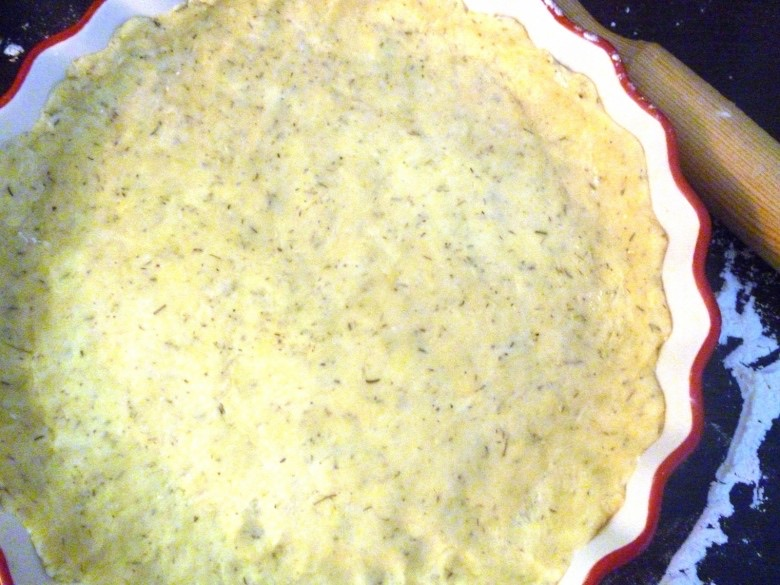
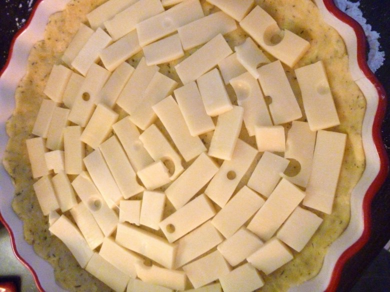
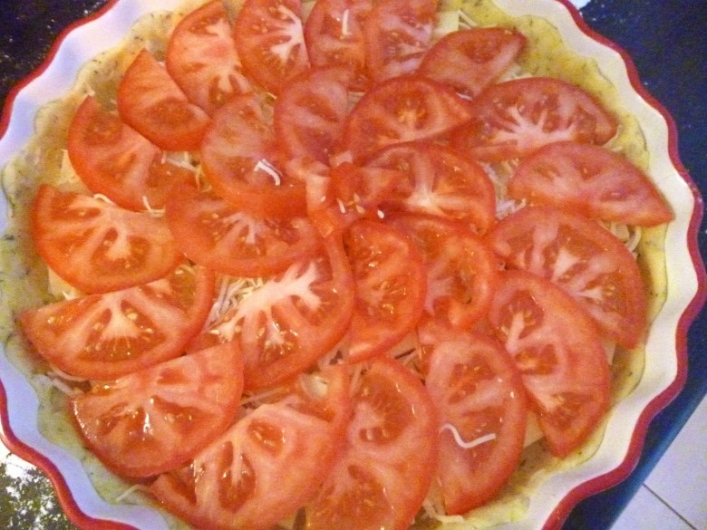
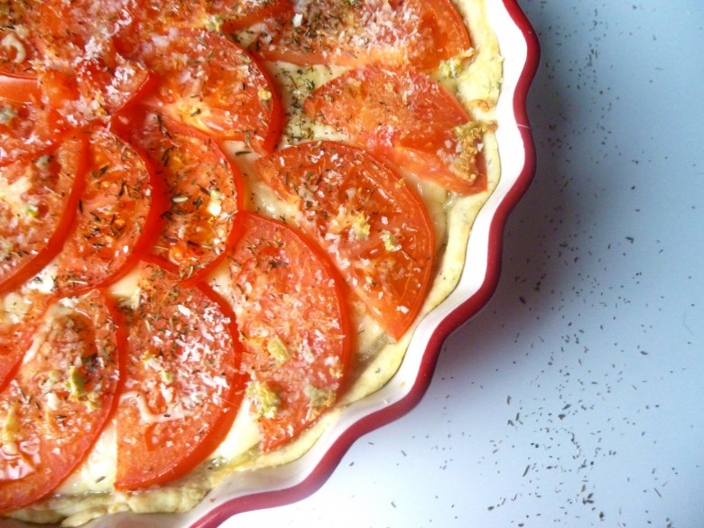

Tarte à la tomate

Délicieuse tarte de ma belle mère!!
Voila enfin la recette de tarte salée que je vous avez promis! 🙂
Il y a un an de ça, l’été dernier j’ai mangé une tarte à la tomate faite par la maman de mon chéri et j’ai adooooré .
Depuis j’ai l’ai faite et refaite en y apportant ma petite touche personnelle et je suis contente de partager la recette avec vous!
Rien de bien compliqué, une couche de gruyère, des tomates, quelques aromates et le tour est joué!
Vous trouverez ICI comment faire vous même une pâte sablée
Ingrédients
- Pâte sablée
- tomates - 4
- emmental - 250g
- ail - 1 gousse
- chapelure
- herbes de provence
- Huile d'olive
Instructions
- Préchauffer le four à 180°
- Dans un plat à tarte étaler la pâte et piquer la avec une fourchette
- Couper le gruyère en morceaux et le déposer au fond de la tarte
- Couper les tomates en 1/2 rondelles pas trop fines et les disposer sur le fromage
- Mettre la gousse d'ail dans le presse ail et repartir l'ail sur l'ensemble de la tarte
- Arroser d'un filet d'huile d'olive
- Parsemer légèrement de chapelure et d'herbes de Provence
- Enfourner à 180° pendant 20 min
- Servir avec une petite salade à coté et déguster c'est un vrai régal !!




Les tips de la communauté
16 commentaires
Tarte très appréciée et testée avec succès par les lecteurs. Les variantes avec moutarde et fromages différents sont populaires, ce qui montre la polyvalence de la recette.
Astuces
- Ajouter de la moutarde (ancienne ou classique) sur la pâte avant d'ajouter tomate et fromage
- Ajouter du thym ou herbes de Provence dans la pâte pour plus de saveur
- Utiliser mozzarella fraîche à la place d'emmental pour un rendu plus doux
- Ajouter du thon en morceau pour une variante plus riche
Variantes suggérées
- Remplacer l'emmental par de la mozzarella fraîche
- Ajouter du thon avec la moutarde
- Utiliser des herbes de Provence ou du thym dans la pâte